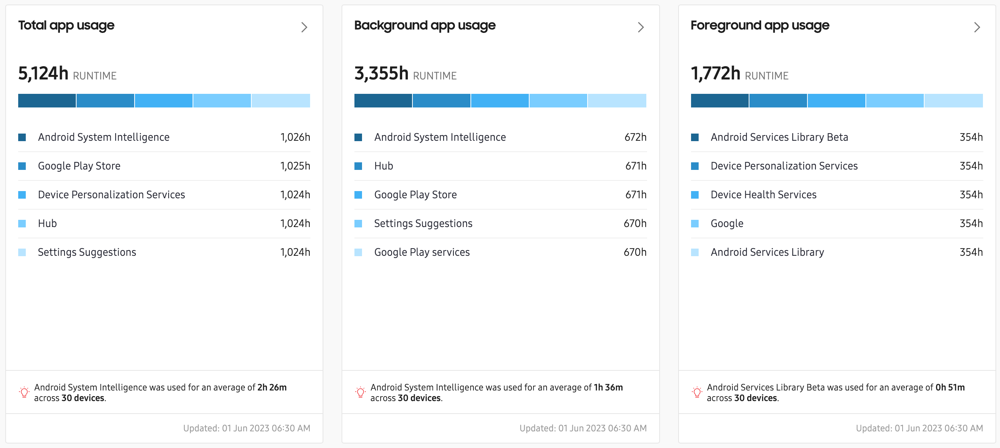

App usage
Last updated July 26th, 2023
To better understand how your devices are used on the frontline, you can monitor which apps workers are using, how long they’re being used for, and how much battery power and mobile data (Wi-Fi and cellular) are being consumed. Use the cascading charts to view aggregated data among all apps, or narrow it down to a single app. Only work profile app usage is tracked on personally-enabled devices.
Module views
For a description of dashboard tiles, refer to Dashboard tiles explained.
Dashboard tile

The Total app usage, Foreground app usage, and Background app usage tiles show the combined running times for the 5 most commonly used apps on your devices. You can also hover over a bar in the tile to see metrics for a specific app.
At the bottom of this view, the most commonly-used app is highlighted, along with its average run time across the devices that have it installed.
Caution
App usage data isn’t collected when the device is charging.
To further enhance app insights, Knox Asset Intelligence breaks down apps into two categories — managed and unmanaged. Managed apps are apps that are related to business operations, while unmanaged apps are related to all other activities. Using this feature, you can easily filter out app activities that aren’t work-related.

In this tile, you can see the number of managed and unmanaged apps as both a visualization and list. At the bottom of the tile, the percentage of managed apps as part of the total number of apps is highlighted.
Additionally, the Apps with highest battery consumption and Apps with highest network usage tiles provide you with details on which apps are consuming the most battery and network data.

- Apps with highest battery consumption — Shows the top five apps that consume the most battery on average, per device and per day.
- Apps with highest network usage — Shows the top 5 apps with the highest network usage, in MB. Usage is separated into Wi-Fi and mobile categories in the graph, with the average usage amount per app listed underneath.
By default, if an app reports high battery or network consumption data on 10 or fewer devices, the app is excluded from the reporting data. For example, if only 5 devices in your fleet are using the YouTube app, this app will not be included in the reported data, even if it consumes the highest battery or network resources in your fleet.
To record highest battery and network consumption data for all apps, regardless of how many devices are running them, go to Settings > THRESHOLDS > APP, then change the value to 0 in the Exclude apps that report battery consumption and network usage data for N devices or less field.

Click the Settings (gear) icon to go to the dashboard settings and configure a list of managed apps. Only apps that Knox Asset Intelligence has collected data on within the last 60 days can be seen in the list. Once you define the managed app list, you can filter your Knox Asset Intelligence dashboards by managed or unmanaged apps.
Expanded view

On any of the app usage dashboard tiles, click > to move to the corresponding expanded view. In the expanded view, you’ll see a comprehensive line graph that further breaks down the metrics shown on the dashboard tile. For example, the Total app usage graph represents the run time of the apps used on that day. Hover over a point on the graph to see the total run time, foreground usage, and background usage for the day.
In the top ribbon, search for a group name to see app usage data for only that group. You can also filter the chart information and choose to see data by App, which is set to All by default. If Knox Asset Intelligence is set to display only managed apps data, the App filter is automatically set to Managed.
For the Apps with highest battery consumption, the expanded view lets you see normalized data in addition average data on the chart. With normalized data, you can see which apps consume the most battery, when compared against the total app run-time.
Below the line graph is a detailed list of app usage metrics, broken down into the following categories:
- APP — The name of the app. Click to open the drill-down view for metrics on running time and the number of devices using an app version.
- PACKAGE NAME — The package name. Use this to uniquely identify an app on your devices.
- DEVICE COUNT — The number of devices that use the app
- TOTAL RUN TIME — The total amount of time, in hours, that the app has been running on your devices. Sum of total foreground and background run times.
- TOTAL FOREGROUND RUN TIME — The total amount of time, in hours, that the app was running in the foreground on your devices.
- TOTAL BACKGROUND RUN TIME — The total amount of time, in hours, that the app was running in the background on your devices.
- AVG RUN TIME — The average amount of time, in hours and minutes, per device that the app ran.
- AVG MOBILE DATA USAGE — The average amount of mobile data the app used on a device.
- A VG WIFI DATA USAGE — The average amount of Wi-Fi data the app used on a device.
- AVG NETWORK DATA USAGE — The average amount of data, in MB, per device that the app consumed.
- AVG BATTERY CONSUMPTION — The average battery percentage consumed by an app on the device.
- NORMALIZED BATTERY CONSUMPTION — The percentage of battery power consumed per hour of app run time
Drill down view

In the expanded view of any app usage tile, click an app name in the app list to open the drill-down view for that app. The top ribbon displays usage metrics for the selected timeframe, including the total run time, average network data usage, average run time, and average amount of battery used by the app per day.You can also see the total number of groups containing devices that reported usage for the app you’re viewing.
Under the group count, click View all for another drill-down view that summarizes app usage data per group in an easy-to-read table.

The TOTAL RUN TIME AND DEVICE COUNT graph displays the total background and foreground app usage over the configured time period, as well as the number of devices. Hover over a section of the graph to see run time totals, average network usage, and average battery usage for that group of devices. In the pop-up’s Device field, you can click the download link to get a CSV file that summarizes your app usage for every device that reported data
The DEVICE COUNT PER APP VERSIONS graph provides a quick visualization of the proportion of your devices running outdated versions. Under the graph, the **APP VERSIONS FOR APP NAME__ list displays additional details about the number of devices running each version, as well as total and average run time and network usage metrics.
Is this page helpful?